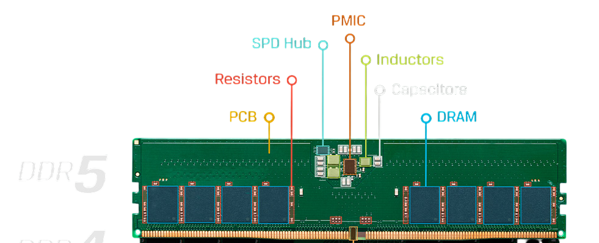

La memoria RAM DDR5 se lanzó al mercado a finales del año 2021 es una de las RAM sacadas más recientemente.
La memoria RAM DDR5 que significa Double Data Rate type 5 lo que en español quiere decir (Doble Velocidad de datos tipo 5) es la quinta y más recinte generación de memorias RAM
Funciona con una mayor velocidad y eficiencia que la DDR4, esto gracias a su arquitectura de subcanales dobles de 2*32 bits y su gestión integrada.
- Velocidad: Su medida es en MT/s que significa "Mega Transfers por segundo " o MHz, en esta generación su velocidad de datos esta entre los 4800 MT/s o hasta los 8800 MT/s , lo que equivale a 4800 MHz
- Compatibilidad: Las ranuras de la memoria DDR5 son físicas y eléctricamente incompatibles con otras generaciones, caracteristicamente para poder identificar de que tipo es una memoria se observa la posición de su hendidura.
- Voltaje: Esta Memoria DDR5 opera con un voltaje de 1.2V lo cual es un voltaje más bajo que la anterior generación DDR4.
- Capacidad: La capacidad que este módulo ya es más grande ya que tiene 128 GB (Gigabyte) por módulo.
- Cantidad de pines: 288 pines
- Datos importante: Al cambiar una memoria RAM es fundamental verificar siempre que su módulo en este caso que la Memoria DDR5, sea compatible con la placa base para evitar problemas. Lo cual es fácil de identificar por que la Memoria RAM tiene una hendidura caracteristica de cada generación. La hendidura de esta generación se encuentra ubicada justo en la mitad de la memoria.
La memoria SO-DIM que significa Small Outline Dual In-Line Memory Module que su significado en español es (Módulo de Memoria en Línea Doble de Esquema Pequeño)
Esta es una versión compacta de los módulos de memoria RAM (DIMM) utilizada principalmente en Mini PC, laptops modernas de alta y media gama que tienen un espacio limitado por su tamaño pequeño.

Las dimensiones de la memoria SO-DIMM DDR5 son:
- Largo: Aproximadamente 67.6 milimetros
- Alto: Aproximadamente 30 milimetros
Cantidad de Pines: 262 pines
Estuvo presente aproximadamente en el año 2021 y se empezó a utilizar de forma masiva en el año 2022 y era utilizado por laptops con procesadores Intel Core de doceava generación(Alder Lake), Intel Core de treceava generación(Raptor Lake) entre otros más.